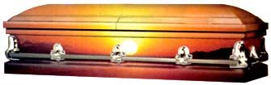

Planning A Low-Cost, Green Funeral
Learn about the costs of funerals, how to plan an inexpensive funeral, and how a green funeral can be good for the Earth and save you money.
By Tim Matson
August/September 2001
Guess what? You're going to die. Not today (with luck), not tomorrow (you hope), but some day. The Grim Reaper waits. Sure, you already knew that, and you try not to think about it. But before you flip the page, let me tell you the problem with death denial (those undertakers who happily profit on death fears can stop reading now). Ignorance may be bliss when it comes to mortality, but it's going to cost you. Funerals are often more expensive than we expect, but learning about how much the average funeral costs and how to plan a low-cost funeral can really help save you money. If you have a green funeral, it can be relatively inexpensive, as well as better for the Earth.
A couple of years ago, hitting my mid-50s, I'd heard about enough overpriced funerals and unsatisfactory memorial services to take a stab at saving my relatives some money, and possibly unnecessary grief and confusion, by making my own funeral plan. I was also inspired by the story of a northwoods logger who built his own coffin and slept in it, "To get used to it," he said. Talk about confronting your demons.
I'd already spent plenty of time trying not to think about death. (My favorite ale was a dark brew called Courage.) But how long can you ignore the gray hairs, back aches and general dilapidation? So I hit the road, dropping in on undertakers and coffin makers, stone carvers and grave diggers, looking for a simple exit strategy. In the process I gained a surprise dividend: emotional peace.
There was a bottom line rationale for my quest. As a tight fisted Vermonter, I don't like the notion of being fleeced by an undertaker when I'm in no position to fight back. Maybe you heard about the unidentified woman who froze to death under a car in Minnesota. In compliance with state law, an undertaker was appointed to handle her funeral arrangements. He planned to a collect the usual nominal fee from the state, until it was discovered that the deceased had an impressive estate. The undertaker was able to raise his fee and, according to an attorney in mortuary law, "earn some extra income for a limited amount of work." A nasty preview of the surprisingly common fate many of us will share: Post-mortem larceny.
Strange, how little we're taught about one of life's big events. According to a recent study, 75 percent of hospice patients don't discuss death with their families. Marriage, sex, birth, growing tomatoes - we're up to the neck in life skills information. But death? Leave it to the experts.
There are 23,000 funeral homes in the United States, and they take in $25 billion every year (more than the airline industry and garbage collection). Not bad for a business that hardly existed 150 years ago, when deaths were handled by families, the church or the local sawbones.
All that began to change with the industrial age. If you couldn't keep people down on the farm, the pursuit of happiness often ended with no one to dispose of the body. Enter the undertaker (with help from a Civil War doctor who invented an embalming process that made it possible to preserve and transport bodies with one profitable stop at the funeral home). Back then it was called a mortuary, but funeral home had a much nicer ring to it, and the undertaker (make that funeral director) was catching on to a brilliant psychological insight. As Americans lost their intimate contact with death, they were just as happy to forget about the whole damned thing. It wasn't just industrial streamlining that inspired coffin makers to ditch the six-sided "toe pincher." A rectangular shape looked so much less like what it was. Changing the name to casket boosted the antiseptic effect even more.
The campaign continues today. Over the past decade or so, 10 to 15 percent of the funeral homes in the United States have been bought out by corporate chains whose names have been sanitized of any sepulchral trace, among the biggest is Service Corporation International (SCI). But they've made sure the Mom and Pop funeral parlors they acquired retain their trusted names. However, they have made big changes in mark-ups, often lure unwary customers into lucrative contracts, and occasionally even engage in deceptive deals with church organizations to corral customers. Coffin prices continue to be one of the worst over-charges, even after an FTC ruling in 1984 that allowed customers to buy their own coffins. Funeral directors still can charge as much as $1,000 for bring-your-own coffin "handling fees." (Virginia, Louisiana and Oklahoma still won't permit you to buy your own coffin.)
Before the stock market began its current meltdown, the death rush went bust. SCI is on the rocks. Financial analysts chalk it up to overpayment for acquisitions, but customers no doubt are also beginning to shy away from expensive services, especially of the last-minute, unplanned variety.
Consumer advocate Lisa Carlson, head of the Funeral Consumers' Alliance, suggests that an impromptu funeral is likely to cost much more than a planned event. "If you don't do your homework, it's like giving the funeral home a blank check," she warns. She points out that in the age of the Internet, it's not difficult to research funeral options and costs on the Web. Considering that funeral expenses average $6,000 in the United States, not including cemetery and monument costs (which bring the total up to $8,000, according to the AARP), there's plenty of opportunity for savings.
So how exactly do you leave this world without being taken for a ride? Begin by asking yourself some basic questions. First, cremation or whole body burial? The funeral industry would prefer to put all of you 6 feet under because that's where the biggest profit lies. To bury a body usually involves treatment in a funeral home, often incurring hefty charges for cosmetology and embalming. Then there's the hearse, burial plot, headstone and protective vault (to prevent the sod from collapsing on a rotting casket - sorry, in most cemeteries it's the law). Not to mention the coffin, which can cost thousands by itself, most of it in humongous funeral-home mark-ups. Throw in a memorial services, wake and graveside ceremony, and we're talking real money. Oh, don't forget the flowers.
No wonder so many people are opting for cremation (25 percent now, and the number is rising dramatically). There's a new crematorium in my neighborhood that charges only $550, which includes pickup of the body and personal delivery of the remains. The young owner even throws in a composite granite urn, gratis. When local undertakers heard about this upstart, they tried to put him out of business for operating an unlicensed funeral home. He argued that he was simply operating a crematorium. Big difference, legally. The Vermont attorney general gave him a green light.
After reading about this no-frills rebel, I visited the crematorium (in an old coffin factory), checked out the retort (looks like a maple sap evaporator), and signed up. The average person requires about 40 pounds of gas to be cooked down to a 5-pound mound of gray ash. The ashes are scooped out of the oven into your choice of container: plain cardboard box, granite urn or wooden cube, which costs extra.
Alas, the benefits of a quick, low-budget cremation may be offset by a regrettable tendency to procrastinate when it comes to dealing with ash disposal. Did the deceased forget to leave instructions? Is the family itself scattered around the countryside, unable to gather for a timely sprinkling ceremony? Showing me around his funeral parlor, one undertaker opened the door into a room full of blue cardboard boxes - unclaimed ashes. If you don't want to wind up a trapped spirit in cosmic limbo, warn your family that you'll come back to haunt them if they ignore your wishes.
In fact, whatever your plans, a family discussion is essential. One bromide of the funeral trade still holds true: funerals are for the living. No sense inflicting unnecessary pain on the survivors.
If you do choose a whole body funeral, you're probably going to need the services of a funeral home. The body is usually transported from the place of death to the funeral establishment, where it is prepared for burial. However, unless the body can be buried within a few days, it may need to be embalmed. If a memorial service is planned with the deceased present, the body is placed in a coffin and transported to the church or synagogue. It's also usually possible to have a memorial service at the funeral home itself. Burial customarily follows the service.
If ever there were a time for planning, this is it. People are often so grief-stricken when relative dies that rational choices are impossible, and some undertakers cash in on this pain. But remember, plan ahead doesn't mean pay ahead. Many undertakers will try to coax potential clients into signing up for a fixed fee funeral "whenever the time comes."
That may sound like a hedge against inflation, but they can't guarantee how long they'll be in business, or where you'll die. If you want to be sure the money will be there when it's needed, put it in a bank.
Fortunately, there are alternatives to expensive professional funerals. Most states allow people to handle funeral details without an undertaker. Options for do-it-yourself funerals include building the coffin, transporting the deceased, and even digging a backyard grave. In many states it's legal to bury a body on your own land, although there is usually some permitting required (including signed death certificate). In circumstances involving contagious diseases such as hepatitis B and AIDS, special precautions have to be taken. Check with your state health department and town zoning administration first. The Funeral Consumers' Alliance can help, too. Home burials aren't for everyone, but a resourceful do-it-yourselfer can skip cremation entirely, build a coffin (or simply use a shroud), and dig the grave.
For those who bury their own dead, the motivation usually is less financial than spiritual. Again, the burial plot should be recorded in town documents. There's also a small but growing movement here and in England toward "green burials," in specifically designated cemeteries which dispense with coffins and vaults entirely.
Burial options aren't the only decisions you face. Advances in medical technology have made it possible to recycle various body parts, and many people feel ennobled by the idea of giving someone the gift of life when they die. Clearly, there's no lack of demand, with a national registry of potential recipients that outnumbers donors 3 to 1.
To avoid the potential for ethical abuses, financial rewards are not permitted for organ donation (although the hospital does pay the "harvesting" costs). Donating your body for medical research affords some financial benefits. The medical school usually pays for the cost of cremation, and may offer to bury the remains.
Most people prefer to arrange for the interment themselves. In fact, there's a trend of bringing the deceased home for burial (if he or she isn't there already). With ashes, the process is relatively straightforward. The funeral director or crematory operator picks up the body and sends or delivers the ashes. In most states, no permit is needed to scatter ashes on your own property, or in the ocean. It's often possible to create a small private cemetery on your land.
Whether you build a coffin, bury a body or help plan a service, it's essential to play a part in funeral preparation to achieve a sense of closure. More than a year after her father's death, a friend still regrets being rushed through memorial preparations by the undertaker. "He handled everything," she said. "I don't feel like I was really involved, it happened so fast."
As for my plans, aside from the choice to be cremated, I'm leaving it up to my family to arrange a memorial service. Surprise me. But forget the cardboard box. I found a fallen maple tree limb and carved it into an urn. It's not big enough to sleep in, but it makes a great cookie jar, while I'm waiting.
Choosing a Funeral Home
Kelly Smith is public relations director for the National Funeral Directors Association, in Brookfield, Wis. He keeps an eye on surveys and trends connected to the funeral business, as well as updates his more than 13,000 members and the public on current issues.
Smith emphasized planning and said it's important to get the family involved in the process. Plans made in isolation may not jibe with family members' wishes, and they'll be the ones doing the work. If you plan to use a funeral home, decide how much you want to spend and how the payment will be made. "Make sure the funeral home has provided all price information," he said. "Talk to the funeral director about payment. It can be tough to liquidate assets after a death. Make sure someone can get at the money."
Kelly said advancement payment contracts may be attractive to those who have no relatives or friends to take care of their wishes. "Advance payment can also be used to draw down assets for Medicaid purposes."
To choose a funeral home, "Visit some funeral homes and find out which one feels comfortable, which meets your family needs best." He suggested that one's children should be supportive of the plan.
A recent survey showed that people choose a funeral home based on location, reputation and the family's previous experience. An American Association of Retired Persons (AARP) survey shows that 10 to 12 percent more of us now take the time to shop for a funeral home. Perhaps the biggest trend of all, Kelly said, was a new emphasis on families looking for personal, individual services. "More people want a celebration," he said, "and less of the traditional mourning."
Though the actual costs of a funeral vary widely depending on where the services are pur chased, average funeral costs break down this way (and, like a wedding, can easily get way out of hand):
Casket: $2,000
Vault: $1,000
Small Burial Plot: $1,000
Headstone: $1,000
Embalming: $500
Cremation: $1,000
Urn: $500
Church or Synagogue Honorarium: $50-$500
Flowers: $500 (country); $1,500 (city)
Average cost: $7,050 to $9,000
Low-Cost, Green Funeral Resources
Books
Your Final Act of Love, by Lisa Carlson. Comprehensive funeral information for the lay person. In addition to the do-it-yourself information, it covers cemetery and crematory laws and regulations, and much more.
I Died Laughing, by Lisa Carlson. A genre-bending approach to death that blends humor with useful information about everything from old age to living wills and cremation, as well as funeral rites and rights.
Dealing Creatively with Death, by Ernest Morgan. A small encyclopedia on death-related problems, including death education, hospice, bereavement, simple burial and cremation.
Round Trip to Deadsville, by Tim Matson. Tim Matson takes a wry, vaguely suspicious, and whirlwind tour of the business of death.
Fancy Coffins to Make Yourself, by Dale L. Power. Detailed instructions and color photos provided to help guide you step-by-step in crafting your own casket. One of the few books of its kind.
Other Resources
Funeral Consumers Alliance. A national advocacy organization with more than 120 local societies and alliances. All are nonsectarian nonprofit organizations.
American Association for Retired Persons (AARP). National organization offering free reports on many funeral-related issues.
National Funeral Directors Association. Leading trade organization, providing literature, materials and speakers on many aspects of funeral planning.
Greenfield Coffins (in England). Producers of cardboard coffins.
Ramsey Creek Reserve. They have a number of nature preserves where burial sites are located. An alternative to the traditional cemetery.
Trappist Caskets. The monastery is located on the second largest forest preserve in Iowa. The wood used in the production of the caskets is harvested from their own trees.
 PHOTO: WEBCASKETS (LEFT); NEW MELLERAY ABBEY (RIGHT) Traditional caskets are now available online, and the plain pine box has given way to simple designs with character, craftsmanship and handmade charm. |
CHRISTOPHER MORRIS/BLACK STAR PUBLISHING (LEFT); FILE PHOTO (RIGHT) Formal or simple? Expensive or modest? Today's consumers have many options when it comes to funeral expenses and the types of services they choose. |
NEW MELLERAY ABBEY Monks at New Melleray Abbey in Peosta, Iowa, have been making caskets for 150 years, using logs from the abbey's own forest. New Melleray offers a range of prices: The shaped pine casket (first image) costs about $650. Shipping costs from $60-$150. |
|
MIRO VINTONIV/STOCK, BOSTON INC. One bromide of the funeral trade still holds true: funerals are for the living - all the more reason to plan ahead and make the process as easy as possible for those making decisions. |
WEBCASKETS As a less expensive alternative to burial, cremation has grown in popularity in recent years. |
STEPHEN FRISCH/STOCK, BOSTON INC. For those who prefer burial, a funeral home is usually involved, though a backyard burial may be an option, rather than one in a cemetery. |
|
 WEBCASKETS Webcaskets is one of several online sources for caskets of various prices delivered to your door. The company offers standard and customized caskets, some with a humorous touch. This casket, `Sunset,' sells for $1,995. |
|
|